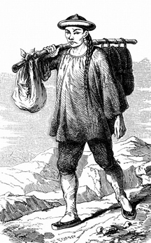

COLUMBIA CHINESE CEMETERY RECORDS.
China Plot
1852 to 1905 Locator

Chinaman 1850

Cemetery

A.
=09
Ah Ann - Born c1817 - Buried 26 April 1881 consumption. Miner. <=
b>No. 337
Ah Cain - Born c1841 - Buried 24 Mar 1879 Accident in mining cla=
im. Miner. No. 309
Ah Chong - Born c1856 - Buried 12 June 1877 Caving of a boulder =
in a mining claim.=20
Miner. No. 291
Ah Chung - Born c1822 - Buried 9 April 1885 Dropsy. miner. No=
. 374
Ah Chy - Born in China c1823 - Buried 2 Feb 1898. miner. No.=
?
Ah Cook - Born c1854 - Buried 28 Aug 1879 Fever. Prostitute. =
No. 315
Ah Cum - Born c1854 - Buried 7 Sept 1884 Malaria fever. miner. <=
b>No. 365
Ah Fat - Born c1827 - Buried 27 May 1873 killed in a mining clai=
m at Springfield.=20
Miner. No. 252
Ah Fi - Born c1826 - Buried 22 Aug 1889 Malaria fever. Miner. R=
emoved 8 Jan 1897 No. 409
Ah Fook - Born c1826 - Buried 18 May 1873 killed by knife cut in=
hands of a chinaman.=20
Cook. No. 251
Ah Fook, Charley - Born in Columbia c1834 - Buried 2 Sept 1893 =
Dropsey. No. 452
Ah Fung - Born c1851 - Buried 1 Oct 1878 China woman (prostitute=
) died of consumption. No. 304
Ah Hing - Born c1819 - Buried 3 Aug 1890 Malaria. Miner. Remo=
ved. No. 430
Ah Koo - Born c1836 - Buried 8 June 1873 comsumption. Miner. =
No. 253
Ah Kue - Born c1828 - Buried 3 Oct 1889 Malaria fever. Miner. =
No. 416
Ah Lahn - Born c1832 - Buried 9 Feb 1868 suicide - hung himself =
at Springfield.=20
Butcher. No. 213
Ah Ling - Born c1854 - Buried 1 Jan 1879 Consumption. Miner. =
No. 307
Ah Long - Born c1839 - Buried April 1897 Found dead in bed. =
No. ?
Ah Moher - Born c1823 - Buried 28 Aug 1889 Malaria fever. Chi=
nawoman. No. 410
Ah Nook - Born c1858 - Buried 2 Sept 1884 Malaria fever. miner. =
No. 363
Ah Poo - Born c1816 - Buried 28 July 1879 found dead in a cabin.=
No. 312
Ah Pung - Born c1840 - Buried 10 Sept 1889 unknown. Miner.
Ah Quay - Born c1823 - Buried 22 May 1890 unknown. Miner. =
No. 426
Ah Quock - Born c1847 - Buried 11 July 1897 Rheumatism. No. =
?
Ah Sah - Born c1832 - Buried 8 July 1890 unknown. Miner. N=
o. 428
Ah Soo - Born c1838 - Buried 20 Dec 1873 Shot near French Bar. M=
iner. No. 259
Ah Sin - Born c1830 - Died 1 September 1864 unknown cause. No=
. ?
Ah Sing - Born c1831 - Buried 19 Feb 1891 unknown. China woman=
. No. 434
Ah Sun - Born c1827 - Buried 13 July 1871 cause unknown. Miner. =
No. 238
Ah Tuck, Charlie - Born c1828 - Buried 6 April 1880 fever. Cook.=
No. 323
Ah Wye - Born c1827 - Buried 15 April 1867 killed by knife cut i=
n hands of a chinaman.=20
Miner. No. 203
Ah Yee - Born c1808 - Buried 24 Oct. 1869 suicide - hung himself=
in cabin at Gold Hill.=20
Butcher. No. 226
Ah You - Born c1831 - Buried 4 June 1872 unknown. Miner. No. =
241
Ah You - Born c1844 - Buried 17 Oct 1870 Killed in mining claim =
near Yankee Hill.=20
Miner. No. 232
Ah You - Born c1831 - Buried 5 Sept 1890 Malaria fever. Miner.=
Removed 9 Jan 1899. No. 432
Ah Young - Born c18=
42 - Buried 28 May 1872 consumption. Miner. No. 240
=09
NOTE:(source of information from Craig Abbott in Australia=
)
"Ah" is a generic prefix to a name. Cantonese speakers like to u=
se two words when naming anything, so rather than use a single name, they a=
dd Ah in front to make it a duplet.
If a woman's name is Lan, then she is called either Ah Lan or Lan Lan. =
The simple doubling of the name is also common, and is more of an affection=
ate term.
As for people coming to "the west" it is quite likely that Ah was then =
included as a persons official name by government officials.
Examples:
Sin San = Mr eg: Ho Sin San = Mr Ho
Taai Taai = Mrs eg: Ho Taai Taai = Mrs Ho
Siu Je = Miss eg: Ho Siu Je = Miss Ho
Goh Goh = Older Brother (also generic for an older guy about your age=
or a senior just above you in a company)
Je Je = Older Sister (pronounced like chair chair)
Sook Sook = Uncle (or family friend)
=09
=09
C.
=09
Chin Yow - Born c1849 - Buried 15 Aug 1877 Poisoned herself. Pro=
stitute. No. 293
=09
Ching Sow - Born c1842 - Buried 23 December 1866 No. 196=
Chong Sing - Born c1847 - Buried 31 Nov 1883 Accidental caving o=
f bank in mining claim. miner. No. 356
Chung Fook - Born c1838 - Buried 13 Aug 1884 Malaria fever. mine=
r. No. 361
Chung Lye - Born c1817 - Buried 16 Jan 1885 Drowned in the Stani=
slaus River. miner. No. 372
Chung Sing - Born c1819 - Buried 23 Sept 1884 consumption. miner=
. No. 367
Chung You Ching - Born c1831 - Buried 25 Feb 1889 unknown cause=
of death. Miner. Removed 8 Jan 1897No. 404
Coon Yow - Born c1839 - Buried 19 July 1878 inflamation of bowel=
s. Miner. No. 302
=09
Cum Sun - Born c1843 - Buried 20 Nov 1879 caving of a bank of a=
mining claim. Miner. No. 322
=09
=09
F.
Fook Zow - Born c1822 - Buried 18 December 1866 No. 195
G.
=09
G Pung - Born c1826 - Buried 1 Nov 1889 Malaria fever. Miner=
. No. 417
H.
Hin Han - Born c1825 - Buried 4 Feb 1887 Consumption. Miner.
I.
In San Long - Born c1843 - Buried 11 June 1878 Child bed (complic=
ations due to birth of child). Former prostitute. No. 301
J.
Jack Tim - Born c1861 - Buried 9 Sept 1889 Dropsey. Miner. =
No. 411
L.
Lum Tuck - Born c1825 - Buried 17 Sept 1880 cancer. Miner. No.=
330
M.
Man Yake - Born c1828 - Buried 9 May 1880 Drowned in the ditch at=
Philadelphia Diggins. Miner. No. 324
Mo Guy - Born c1812 - Buried 3 April 1873 Killed in mining claim =
near Springfield. Miner. No. 247
=09
Mun Hing - Born c1835 - Buried 24 May 1890 unknown. Miner. =
No. 427
Mun Sing - Born c1834 - Buried 20 July 1867 killed by caving of b=
oulder in mining claim.=20
Miner. No. 200
O.
One Lan - Born c1832 - Buried 3 July 1885 Heart disease. Miner.=
No. 377
P.
Poon Ah Chi - Born c1821 - Buried 23 July 1889 unknown cause of =
death. Miner. No. 407
Pun Kins - Born c1845 - Buried 22 Oct 1881 unknown cause. miner. =
No. 339
Q.
Quez Chee - Born c1840 - Buried 13 Jan 1886 Suicide by hanging. =
Miner.No. 386
=09
S.
Su Wo - Born c1858 - Buried 13 July 1886 Suicide by hanging. Mi=
ner. No. 390
Sum Yin - Born c1823 - Buried 25 Sept 1872 Consumption. Miner.
T.
Tee Sang Long - Born c1827 - Buried 21 Aug 1881 unknown cause. Do=
ctor. No. 338
U.
Un-Chinawoman - Born c1853 - Buried 19 April 1885 Prostitute.
W.
Wa Sing - Born c1848 - Buried 24 July 1880 consumption. Miner.
Y.
You Chee - Born c1827 - Buried 11 Nov 1881 consumption. Miner.
Young Low - Born c1845 - Buried 1 Aug 1890 Killed at Knight's Fe=
rry by a blast. Miner. Removed. No. 429
Young Sun - Born c1822 - Buried 26 Aug 1888 Burnt to death in=
his cabin on Gold Hill. Miner. No. 402